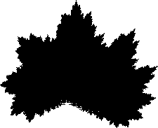

Purpose To use IFS rules for approximating the image of a leaf
Materials A leaf with a reasonably fractal outline (maple and oak are good choices); IFS software; a digital camera or scanner, and a graphics program (computer version of the lab) or tracing paper, ruler, and protractor (manual version of the lab)
Exercise Get your own leaf and try to find an IFS to produce the outline.
Conclusion When the pieces do not exactly tile the image, finding IFS rules is a much more subtle task. Successive approximations appears to be a productive approach.